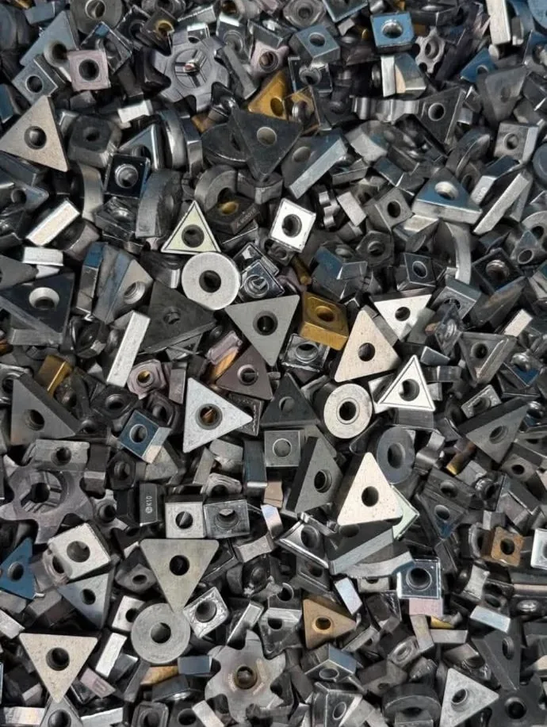
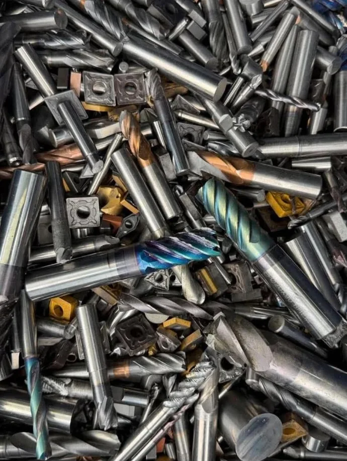
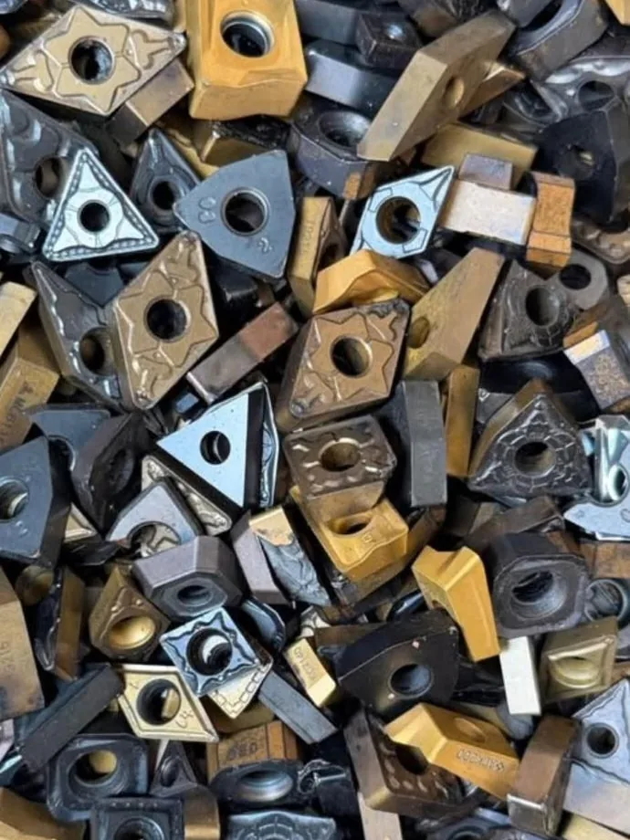
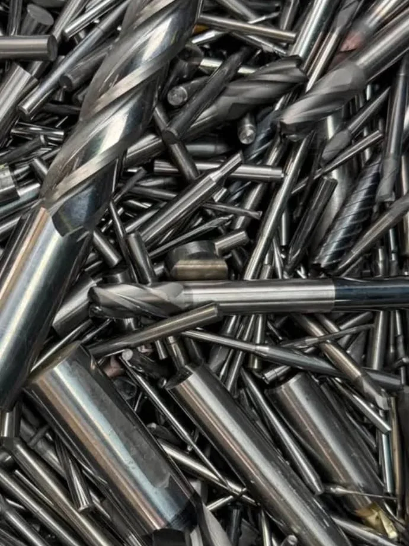

Skupujemy węgliki spiekane (węglik wolframu) – zużyte narzędzia skrawające i odpady produkcyjne. Indywidualna wycena, odbiór z terenu całej Polski i szybka płatność.




Co skupujemy
- Płytki skrawające i płytki wymienne
- Wiertła, frezy i rozwiertaki
- Noże, matryce i stemple
- Odpady po szlifowaniu i ostrzeniu narzędzi
Jak to działa
- Skontaktuj się z nami i opisz rodzaj oraz ilość materiału.
- Przygotujemy dla Ciebie indywidualną wycenę.
- Odbieramy towar i płacimy od ręki.
Dlaczego warto
- Odbiór z terenu całej Polski (D2D)
- Szybka płatność
- Indywidualna wycena
- Kontakt 24/7
Najczęstsze pytania
Czym są węgliki spiekane?
To bardzo twarde materiały, najczęściej na bazie węglika wolframu i kobaltu, z których wykonuje się narzędzia skrawające, wiertła, frezy i elementy odporne na ścieranie. Po zużyciu są cennym surowcem wtórnym.
Jak poznam cenę za węgliki?
Wycenę ustalamy indywidualnie – zależy ona m.in. od rodzaju, stanu i ilości materiału. Zadzwoń lub napisz, a przygotujemy ofertę.
Czy odbieracie materiał z terenu całej Polski?
Tak, działamy na terenie całej Polski i oferujemy odbiór towaru od drzwi do drzwi (D2D).